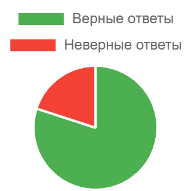

Final examination in Management Psychology (Test form 4)
Начало
11.03.2025 02:45:35
Окончание
11.03.2025 03:02:23
Попытка
1
27/30

Процент верных ответов: 90%
1) What two types of motivation are usually distinguished based on its quality?
Intrinsic and extrinsic
2) Choose the names of 3 aspects of communication
Communicative, manipulative, perceptual
3) Define the term “manager's culture of communication”.
A set of communicative skills that have become an organic part of the manager's personality and ensure the effectiveness of managerial communication
4) Choose the last stage in the process of communication.
Interpretation and making sense of the original message
5) Social responsibility of a manager implies the following:
fulfillment of specific obligations to the team and to the society
6) Choose the name of a research method that matches the following description: a way of collecting data through observing.
Observation
7) Motives for choosing a profession include everything listed below EXCEPT:
proximity to home
8) Choose the term that matches the definition: a socially determined, relatively stable system of attitudes of team members to the team as a whole.
Psychological climate
9) Choose the term that matches the definition: a combination of such mental characteristics that allow people to maintain inner calm, self-control and emotional balance even at critical moments.
Stress resistance
10) Choose the type of conflict that matches the following description: a person’s state of dissatisfaction with certain circumstances associated with the presence of conflicting interests, aspirations, needs that generate stresses
Intrapersonal conflict
11) Choose the level of motivation that would be optimal according to the Yerkes–Dodson law.
Medium
12) Choose the term that has the following definition: a form of managers training provided at the workplace.
On-the-job training
13) D. Maxwell listed reasons preventing delegation including everything below EXCEPT:
lack of teaching skills
14) Choose the name of the perception effect that matches the following description: what we think and feel about a person is strongly influenced by our very first impressions of that person.
Halo effect
15) Choose the factor of managerial decisions that matches the following description: a large number of factors taken into account in the decision-making process, as well as their close relationship and mutual influence on each other.
Decision making environment
16) List main decision-making styles.
Analytical, conceptual, directive, behavioral
17) The following types of decisions are usually distinguished based on the duration of the effects.
Programmed and unprogrammed
18) According to K. Platonov's model of personality structure, biopsychic characteristics include the following:
temperament, sexual, age-related, pathological characteristics
19) Choose the group of stress signs that includes increase or decrease in blood pressure, rapid or irregular heartbeat, digestive disorders.
Physiological signs of stress
20) Choose an example of a task that a leader should NOT delegate.
Tasks of a strictly confidential nature
21) Choose 3 characteristics typical for a melancholic.
Unsociable, moody, anxious
22) Principles ensuring the effectiveness of managerial communication include everything below EXCEPT:
authoritarian leadership style
23) Choose the group of communication skills techniques that include the following: creating a favorable last impression and determining the prospects for further joint activities.
Techniques for ending the conversation
24) Choose the term that has the following definition: an individual's subjective evaluation of oneself, one's abilities, qualities and place among other people.
Self-esteem
25) Management psychology belongs to the following branch of psychology:
psychology of labor
26) Choose the term that has the following definition: a combination of personality traits that manifest themselves in all spheres of life and leave an imprint on communication with other people, interests, nature of activity, etc.
Character
27) Choose the conflict management style that matches the following formula: own > other.
Forcing (competing)
28) Choose the stage of stress development when the body tries to return to a normal balance.
Resistance
29) Choose the term that matches the following definition: a process of psychological influence of a leader on followers based on the use of mainly informal sources of power and aimed at solving organizational problems and optimizing intra-group interaction.
Leadership
30) Choose the term that has the following definition: a single representative of the human race, the initial state of a human being in his or her development.
An individual.
Тест пройден